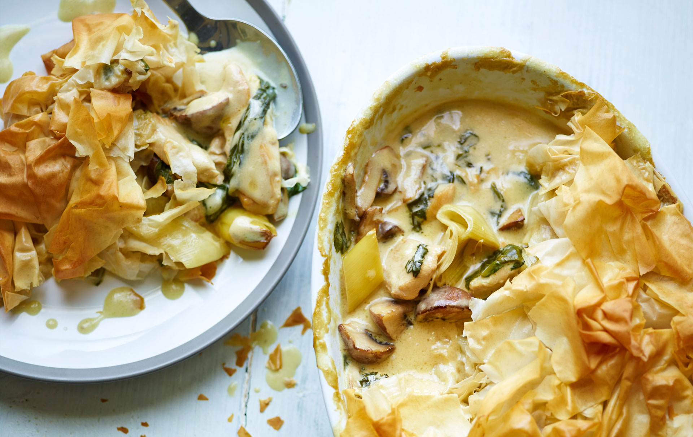

Creamy Chicken Pie

Description
Joe Wicks' creamy chicken pie is a comforting and flavorful dish crafted by fitness expert Joe Wicks. This recipe features succulent chicken chunks in a creamy sauce enriched with chicken stock, cream, and aromatic herbs. Complemented by carrots, peas, and leeks, it offers a balanced, nutritious meal. The pie is crowned with a layer of puff pastry, achieving a golden, flaky perfection that combines both indulgence and wholesomeness, making it an ideal comfort food choice.
Ingredients
- 2 large knobs of butter
- 1 large leek, washed and chopped into 2cm pieces
- 200g mushrooms, roughly chopped
- x4 250g chicken breast fillets, cut into bite-sized pieces
- 250ml chicken stock
- 1 tbsp cornflour
- 100ml double cream
- 2 large handfuls of baby spinach leaves
- About 6 sheets of filo pastry
- Drizzle of olive oil
- Mash potato & veg, to serve
Method
- Preheat your oven to 190°C (fan 170°C, gas mark 5).
- Heat the butter in a large frying pan over a medium to high heat. Add the leek and mushrooms and fry for 2-3 minutes until they just start to soften.
- Crank up the heat to high, add the chicken pieces and fry for a further 2 minutes - the chicken won't be cooked through at this point - then pour in the chicken stock and let it come to a simmer.
- Meanwhile, mix the cornflour with 2 tablespoons of water until smooth, then pour into the pan, along with the cream. Bring back to the boil, stirring gently, and cook until the sauce thickens.
- Remove from the heat and stir in the spinach, then tip the whole lot into a pie dish about 28cm x 15cm. Set aside to cool a little.
- Take a sheet of filo and roughly crumple it in your hands - there is no right or wrong to this method! Place the crumpled filo on top of the chicken filling in the pie dish and repeat with the remaining filo sheets.
- Drizzle the pastry with olive oil, then bake the pie for about 20 minutes, by which time the filo will have crisped up and turned golden brown in places.
- Serve up your pie with fresh salad or some vegetables.